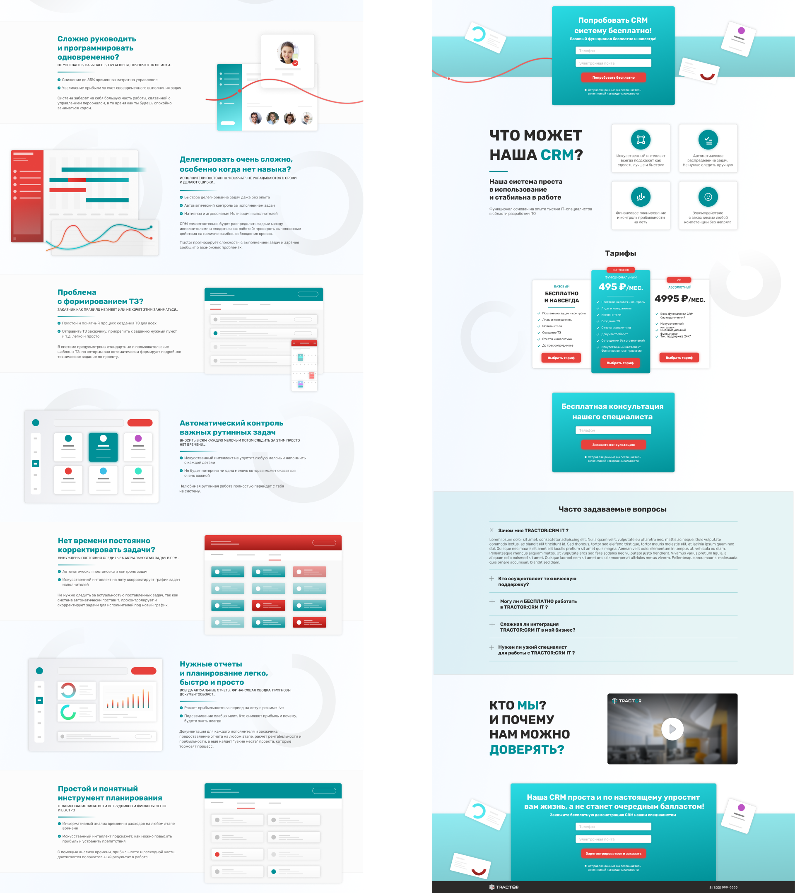
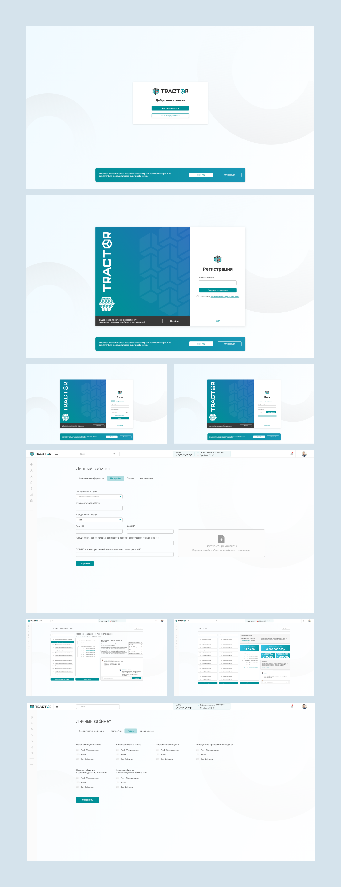

TRACTOR CRM
Разработка адаптивного дизайна landing page для CRM системы, основанной на RPA-технологий. А так же разработка интерфейса непосредственно CRM.
Разработка адаптивного дизайна landing page для CRM системы, основанной на RPA-технологий. А так же разработка интерфейса непосредственно CRM.
Так как на момент разработки дизайна сама CRM система находилась в разработке и LP был нужен, чтобы собрать заявки от потенциальных клиентов - было решено изобразить элементы-CRM в схематичном виде, не используя реальные скриншоты.


НазадЗаварзин Никита